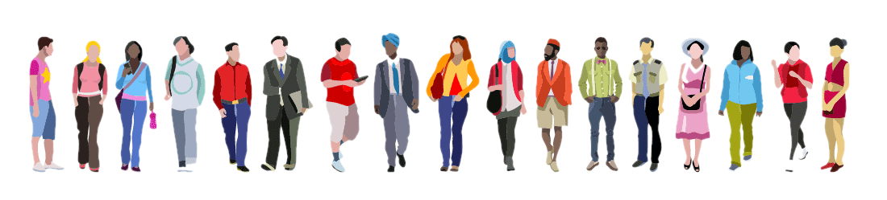
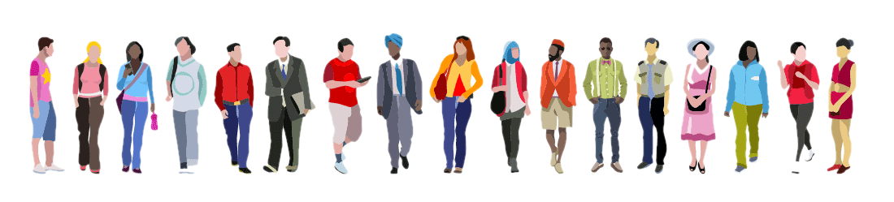

This class was my introduction to coding and the tech world. I feel like I learned alot about the overall purpose of coding along with the power of it. Something that’s always stuck with me was the white-space aspect when designing websites, seen in facebook. When discussing hegemony and meritocracy in workplace behavior and decision-making, tying these themes together with “white-space” helped me understand more about programming. Showing that there are no true diverse inputs in successful platforms that dominate the tech world, they are designed in a way to appeal to one demographic group and the creation is guided by one demographic group. Though, I have seen diverse input throughout my collaborative projects, showing that coding can be truly intimate and creative in certain aspects.
Paired programming has allowed me to learn from my peers and the importance of design. I often felt like I was trailing behind, being that the majority of people I worked with had a background in computer science so I often was unable to understand what they meant when pointing me in a direction of our design. Though, throughout asking questions I was able to learn the basics of programming and web design. My partners and I were able to create an interactive website to highlight all of the important things we learned this semester, something that I would have never thought of doing before this class. I feel our zoom meetings were primarily us working independently on different aspects of the website, everyone had their assigned role though we would occasionally make comments to make sure everyone was on the same page when discussing CSS and content. It was very easy to feel out of the loop though, being that people were using different databases to create the website or new analysis results that I didn’t necessarily understand how to use (it was unfortunate that bluehost was no longer available to us). Everyone was able to incorporate feedback into aspects of the website and this showed me the importance of paired programming. I feel everyone has certain things to bring to the table and it is all about being open-minded and efficient with your code.
This class was really engaging and interesting. I feel that all assignments and discussions were super interactive and highlighted the importance of coding and power. “Algorithms of Oppression” was one of the most interesting reads I have had in my years at UW-Madison. It really made me think about the databases I have been using and the practice of hegemony in racism/sexist ideas. Hegemony was a term I had never heard of before this class, and something that will stick with me as I think about my loved ones careers in the tech industry. It has been mentioned to me before that working for google is like selling your soul, and this class helped me grasp that saying. There is no room for new ideas, it seems like it is all just maintenance and consistent modifications that have to be verified by higher ups, who basically function like robots too. This class made me think in ways I never had before, though I will say I wish I had some background in coding before taking this class. Thank you for an amazing semester!